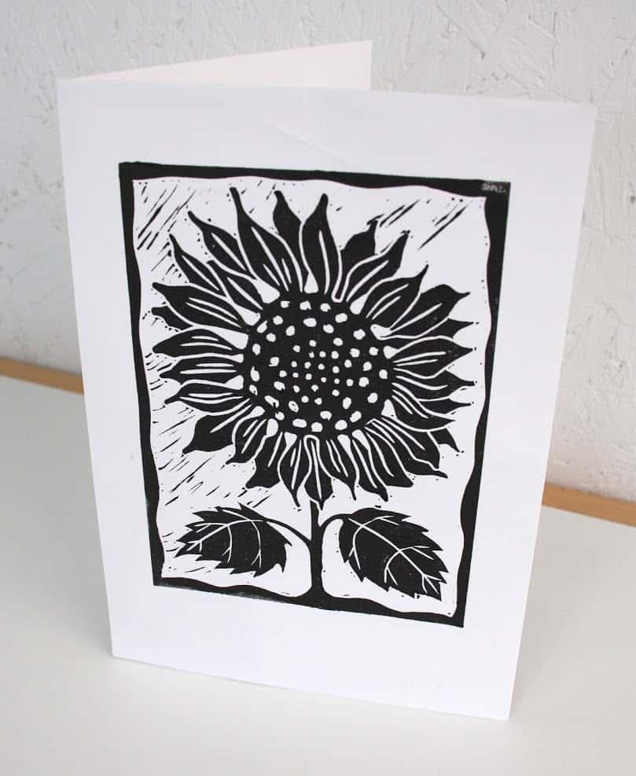

Lino Printing Workshop
by Sarah Jones
Making your own cards is one of the simplest and most effective printing projects. Buy ready-made, blank cards and envelopes, cut the lino to your personalised design and print unique greetings cards.
Requirements
all provided
Location
Hillside Hall Community Centre
76 Hillside Rd
Bath
BA2 3NX